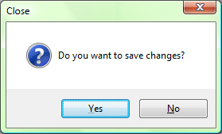

You can close current project ether by selecting Close command from File Menu or by pressing X singh on the project window or on Template Editor window. If you didn't save your last change to the project, than you'll get following dialog to inform you:
